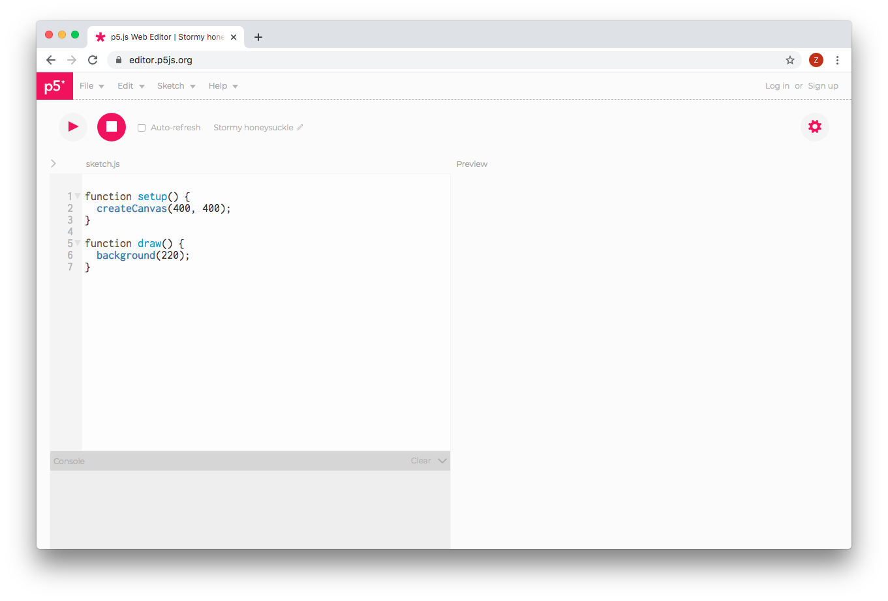

As part of the Google Summer of Code open-source internship program, I contributed to p5.js, a JavaScript library that makes coding accessible to artists, designers, educators, and beginners.
My contributions were to the p5.js Web Editor, a free browser-based editor for p5.js.
I contributed several bugfixes, as well as a design for an online collaboration system that would have been used in classrooms to keep track of assignments and projects using the web editor.